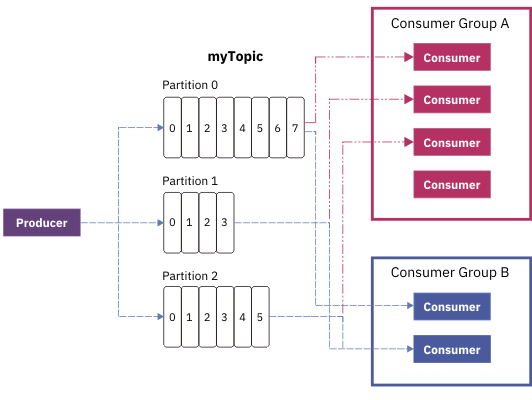

Kafka Toolkit > com.ibm.streamsx.kafka 1.5.1 > com.ibm.streamsx.kafka > KafkaConsumer
The KafkaConsumer operator is used to consume messages from Kafka topics. The operator can be configured to consume messages from one or more topics, as well as consume messages from specific partitions within topics.
The standard use patterns for the KafkaConsumer operator are described in the overview of the user documentation.
This version of the toolkit supports Apache Kafka v0.10.2, v0.11.x, 1.0.x, 1.1.x, and v2.0.0.
The operator implements Kafka's KafkaConsumer API of the Kafka client version 1.0. As a result, it supports all Kafka properties that are supported by the underlying API. The consumer properties for the Kafka consumer v1.0 can be found in the Apache Kafka documentation. Properties can be specified in a file or in an application configuration. If specifying properties via a file, the propertiesFile parameter can be used. If specifying properties in an application configuration, the name of the application configuration must be specified using the appConfigName parameter.
The only property that the user is required to set is the bootstrap.servers property, which points to the Kafka brokers, for example kafka-0.mydomain:9092,kafka-1.mydomain:9092,kafka-2.mydomain:9092. All other properties are optional. The operator sets or adjusts some properties by default to enable users to quickly get started with the operator. The following lists which properties the operator sets by default:
|
Property Name |
Default Value |
|---|---|
|
client.id |
Generated ID in the form: C-J<JobId>-<operator name> |
|
group.id |
hash from domain-ID, instance-ID, job-ID, and operator name |
|
key.deserializer |
See Automatic deserialization section below |
|
value.deserializer |
See Automatic deserialization section below |
|
partition.assignment.strategy |
Only when multiple topics are specified: org.apache.kafka.clients.consumer.RoundRobinAssignor |
|
auto.commit.enable |
adjusted to false |
|
max.poll.interval.ms |
adjusted to a minimum of 3 * max (reset timeout, drain timeout) when in consistent region, 300000 otherwise |
|
metadata.max.age.ms |
adjusted to a maximum of 2000 |
|
session.timeout.ms |
adjusted to a maximum of 20000 |
|
request.timeout.ms |
adjusted to session.timeout.ms + 5000 |
NOTE: Although properties are adjusted, users can override any of the above properties by explicitly setting the property value in either a properties file or in an application configuration.
The operator will automatically select the appropriate deserializers for the key and message based on their types. The following table outlines which deserializer will be used given a particular type:
|
Deserializer |
SPL Types |
|---|---|
|
org.apache.kafka.common.serialization.StringDeserializer |
rstring |
|
org.apache.kafka.common.serialization.IntegerDeserializer |
int32, uint32 |
|
org.apache.kafka.common.serialization.LongDeserializer |
int64, uint64 |
|
org.apache.kafka.common.serialization.FloatDeserializer |
float32 |
|
org.apache.kafka.common.serialization.DoubleDeserializer |
float64 |
|
org.apache.kafka.common.serialization.ByteArrayDeserializer |
blob |
These deserializers are wrapped by extensions that catch exceptions of type org.apache.kafka.common.errors.SerializationException to allow the operator to skip over malformed messages. The used extensions do not modify the actual deserialization function of the given base deserializers from the above table.
Users can override this behaviour and specify which deserializer to use by setting the key.deserializer and value.deserializer properties.
a) The operator is not part of a consistent region
The consumer operator commits the offsets of those Kafka messages that have been submitted as tuples. The frequency in terms of number of tuples can be specified with the commitCount parameter. This parameter has a default value of 500. Offsets are committed asynchronously.
b) The operator is part of a consistent region
Offsets are always committed when the consistent region drains, i.e. when the region becomes a consistent state. On drain, the consumer operator commits the offsets of those Kafka messages that have been submitted as tuples. When the operator is in a consistent region, all auto-commit related settings via consumer properties are ignored by the operator. The parameter commitCount is also ignored because the commit frequency is given by the trigger period of the consistent region. In a consistent region, offsets are committed synchronously, i.e. the offsets are committed when the drain processing of the operator finishes. Commit failures result in consistent region reset.
The operator is capable of taking advantage of Kafka's group management function.

In the figure above, the topic myTopic with three partitions is consumed by two consumer groups. In Group A, which has four consumers, one consumer is idle because the number of partitions is only three. All other consumers in the group would consume exactly one topic partition. Consumer group B has less consumers than partitions. One consumer is assigned to two partitions. The assignment of consumers to partition(s) is fully controlled by Kafka.
In order for the operator to use this functionality, the following requirements must be met
In a consistent region, a consumer group must not have consumers outside of the consistent region, for example in a different Streams job.
Metrics related to group management
|
metric name |
description |
|---|---|
|
isGroupManagementActive |
1 indicates that group management is active, 0 indicates that group management is inactive. |
|
nPartitionRebalances |
Number of partition assignment rebalances for each consumer operator. The metric is only visible when group management is active. |
The operator does not support a config checkpoint clause. A compiler error will occur when checkpointing is configured.
The operator can be the start of a consistent region. Both operator driven and periodic triggering of the region are supported. If using operator driven, the triggerCount parameter must be set to indicate how often the operator should initiate a consistent region.
When a group-ID is specified via the consumer property group.id or the groupId parameter, the operator participates automatically in a consumer group defined by the group ID. A consistent region can have multiple consumer groups.
Tuple replay after reset of the consistent region
After reset of the consistent region, the operators that participate in a consumer group may replay tuples that have been submitted by a different consumer before. The reason for this is, that the assignment of partitions to consumers can change. This property of a consumer group must be kept in mind when combining a consumer groups with consistent region.
When no group-ID is specified, the partition assignment is static (a consumer consumes all partitions or those, which are specified), so that the consumer operator replays after consistent region reset those tuples, which it has submitted before.
When the consumers of a consumer group rebalance the partition assignment, for example, immediately after job submission, or when the broker node being the group's coordinator is shutdown, multiple resets of the consistent region can occur when the consumers start up. It is recommended to set the maxConsecutiveResetAttempts parameter of the @consistent annotation to a higher value than the default value of 5.
On drain, the operator will commit offsets of the submitted tuples.
On checkpoint, the operator will save the last offset for each topic-partition that it is assigned to. In the event of a reset, the operator will seek to the saved offset for each topic-partition and begin consuming messages from that point.
Metrics related to consistent region
|
metric name |
description |
|---|---|
|
drainTimeMillis |
drain duration of the last drain in milliseconds |
|
drainTimeMillisMax |
maximum drain duration in milliseconds |
These metrics are only present when the operator participates in a consistent region.
Many exceptions thrown by the underlying Kafka API are considered fatal. In the event that Kafka throws an exception, the operator will restart.
Optional: appConfigName, clientId, commitCount, groupId, outputKeyAttributeName, outputMessageAttributeName, outputOffsetAttributeName, outputPartitionAttributeName, outputTimestampAttributeName, outputTopicAttributeName, partition, propertiesFile, startOffset, startPosition, startTime, topic, triggerCount, userLib
This input port must contain a single rstring attribute. In order to add or remove a topic partition, the attribute must contain a JSON string in the following format:
{
"action" : "ADD" or "REMOVE",
"topicPartitionOffsets" : [
{
"topic" : "topic-name",
"partition" : <partition_number>,
"offset" : <offset_number>
},
...
]
}
The following convenience functions are available to aid in creating the messages:
rstring addTopicPartitionMessage(list<tuple<rstring topic, int32 partition, int64 offset>> topicPartitionsToAdd);
rstring removeTopicPartitionMessage(rstring topic, int32 partition);
rstring removeTopicPartitionMessage(list<tuple<rstring topic, int32 partition>> topicPartitionsToRemove);
This port produces tuples based on records read from the Kafka topic(s). A tuple will be output for each record read from the Kafka topic(s).
Optional: appConfigName, clientId, commitCount, groupId, outputKeyAttributeName, outputMessageAttributeName, outputOffsetAttributeName, outputPartitionAttributeName, outputTimestampAttributeName, outputTopicAttributeName, partition, propertiesFile, startOffset, startPosition, startTime, topic, triggerCount, userLib
Specifies the name of the application configuration containing Kafka properties.
Specifies the client ID that should be used when connecting to the Kafka cluster. The value specified by this parameter will override the client.id Kafka property if specified. If this parameter is not specified and the client.id Kafka property is not specified, the operator will create an ID with the pattern C-J<job-ID>-<operator name> for a consumer operator, and P-J<job-ID>-<operator name> for a producer operator.
This parameter specifies the number of tuples that will be submitted to the output port before committing their offsets. This parameter is optional and has a default value of 500. This parameter is only used when the operator is not part of a consistent region. When the operator participates in a consistent region, offsets are always committed when the region drains.
Specifies the group ID that should be used when connecting to the Kafka cluster. The value specified by this parameter will override the group.id Kafka property if specified. If this parameter is not specified and the group.id Kafka property is not specified, the operator will use a random group ID.
Specifies the output attribute name that should contain the key. If not specified, the operator will attempt to store the message in an attribute named 'key'.
Specifies the output attribute name that will contain the message. If not specified, the operator will attempt to store the message in an attribute named 'message'.
Specifies the output attribute name that should contain the offset. If not specified, the operator will attempt to store the message in an attribute named 'offset'. The attribute must have the SPL type 'int64' or 'uint64'.
Specifies the output attribute name that should contain the partition number. If not specified, the operator will attempt to store the partition number in an attribute named 'partition'. The attribute must have the SPL type 'int32' or 'uint32'.
Specifies the output attribute name that should contain the record's timestamp. It is presented in milliseconds since Unix epoch.If not specified, the operator will attempt to store the message in an attribute named 'messageTimestamp'. The attribute must have the SPL type 'int64' or 'uint64'.
Specifies the output attribute name that should contain the topic. If not specified, the operator will attempt to store the message in an attribute named 'topic'.
Specifies the partitions that the consumer should be assigned to for each of the topics specified. When you specify multiple topics, the consumer reads from the given partitions of all given topics. For example, if the topic parameter has the values "topic1", "topic2", and the partition parameter has the values 0, 1, then the consumer will assign to {topic1, partition 0}, {topic1, partition 1}, {topic2, partition 0}, and {topic2, partition 1}.
Specifies the name of the properties file containing Kafka properties. A relative path is always interpreted as relative to the application directory of the Streams application.
This parameter indicates the start offset that the operator should begin consuming messages from. In order for this parameter's values to take affect, the startPosition parameter must be set to Offset. Furthermore, the specific partition(s) that the operator should consume from must be specified via the partition parameter.
If multiple partitions are specified via the partition parameter, then the same number of offset values must be specified. There is a one-to-one mapping between the position of the partition from the partition parameter and the position of the offset from the startOffset parameter. For example, if the partition parameter has the values 0, 1, and the startOffset parameter has the values 100l, 200l, then the operator will begin consuming messages from partition 0 at offset 100 and will consume messages from partition 1 at offset 200.
A limitation with using this parameter is that only one single topic can be specified via the topic parameter.
If this parameter is not specified, the start position is Default.
This parameter is only used when the startPosition parameter is set to Time. Then the operator will begin reading records from the earliest offset whose timestamp is greater than or equal to the timestamp specified by this parameter. If no offsets are found, then the operator will begin reading messages from what is is specified by the auto.offset.reset consumer property, which is latest as default value. The timestamp must be given as an 'int64' type in milliseconds since Unix epoch.
Specifies the topic or topics that the consumer should subscribe to. To assign the consumer to specific partitions, use the partitions parameter. To specify multiple topics from which the operator should consume, separate the the topic names by comma, for example topic: "topic1", "topic2";.
This parameter specifies the number of tuples that will be submitted to the output port before triggering a consistent region. This parameter is only used if the operator is the start of an operator driven consistent region and is ignored otherwise.
Allows the user to specify paths to JAR files that should be loaded into the operators classpath. This is useful if the user wants to be able to specify their own partitioners. The value of this parameter can either point to a specific JAR file, or to a directory. In the case of a directory, the operator will load all files ending in .jar onto the classpath. By default, this parameter will load all jar files found in <application_dir>/etc/libs.
Shows the Kafka group management state of the operator. When the metric shows 1, group management is active. When the metric is 0, group management is not in place.
Number of topic partitions assigned to the consumer.
Number of dropped malformed messages
Number times message fetching was paused due to low memory.
Number of pending messages to be submitted as tuples.
Number times message fetching was paused due to full queue.